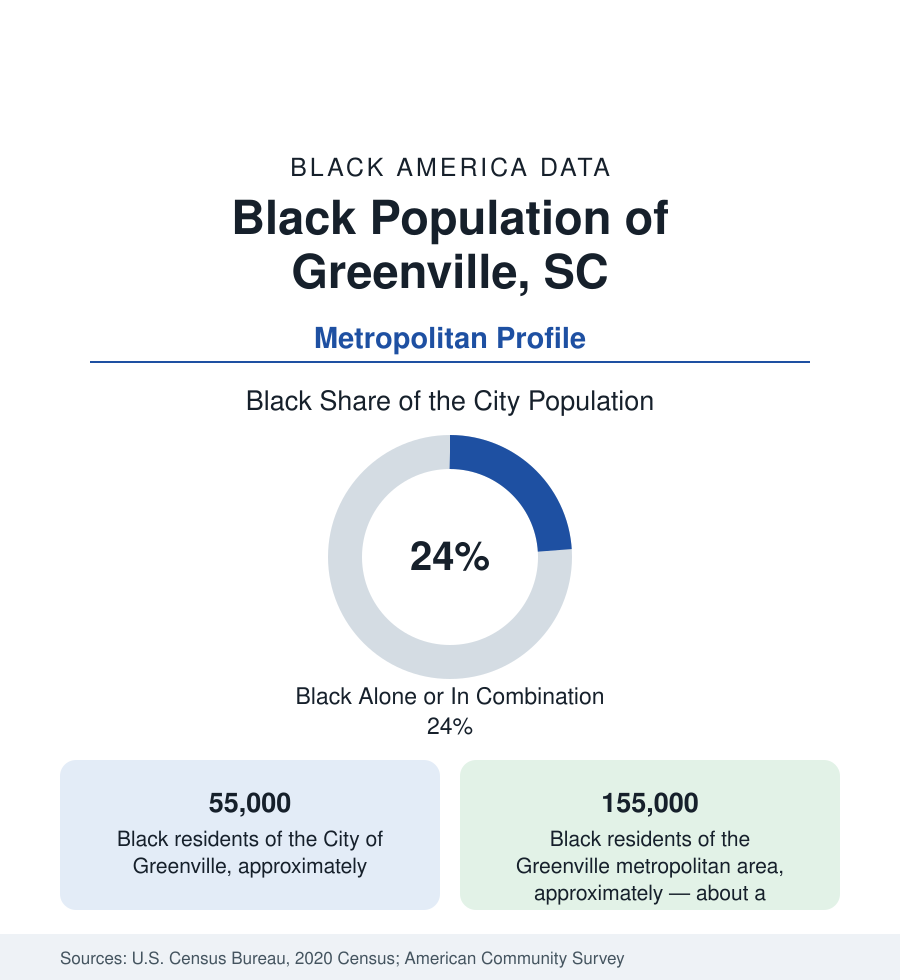

Black Cities
Black Greenville: The Upstate's Textile-and-BMW Crossroads
Greenville holds about 55,000 Black residents in the city and 155,000 across the metro — the South Carolina Upstate's anchor community. The census profile.

Greenville holds about 55,000 Black residents within the city — Black alone or in combination, nearly a quarter of its 70,000 people in the compact city — and about 155,000 across the metropolitan area, the largest Black community of the South Carolina Upstate. The region's story runs from the textile mills of the Reedy River (whose village workforce was white by the industry's design — a fact the Upstate's data must start from) through the civil-rights movement's Greenville chapters — Jackie Robinson's airport arrest here in 1959, Jesse Jackson's Greenville County boyhood — to the BMW-and-Michelin manufacturing renaissance whose payrolls the modern community shares.
Southernside, West Greenville, and the Sterling Ground
The geography gathers west and south of the celebrated downtown: Southernside and the West End's Black blocks (the community's historic core beside the ballpark district, its displacement by the downtown revival a documented file), West Greenville and the Brutontown enclave (an unincorporated Black community of the county's northwest, land held since the nineteenth century), Nicholtown and the East Side's Judson and Gantt districts (the mill-and-rail working ground), and the Mauldin–Simpsonville corridor's suburban spread. Sterling High School — the segregated Black high school whose alumni network is the community's memory institution (its building burned in 1967; its name carried by the Sterling Community Center and the annual homecomings) — anchors the heritage map with the Springfield Baptist and Allen Temple congregations and the Urban League of the Upstate's offices. Jesse Jackson's Greenville (his childhood in the Haynie Street neighborhood, his Sterling years before the football scholarship to Illinois) is the biographical dateline the city claims.
Mills That Weren't, Then Plants That Were
The employment data carry the textile exclusion's long shadow: the mill economy that employed the Upstate's white working class for a century hired Black workers last and least (the janitor-and-yard ceiling of the mill file), so the community's industrial century ran through service, domestic, and public work — and the modern manufacturing renaissance arrived on different terms: BMW's Spartanburg plant (the German automaker's largest factory, thirty minutes east, drawing Upstate-wide), Michelin's North American headquarters and plants, the GE turbine works, and the supplier web between them, alongside Greenville Health/Greenville Memorial's system, the school districts, and the hospitality tier of the model downtown. The indicators show the Upstate spread: Black incomes below the booming metro's line, poverty concentrated in the western and southern city tracts, homeownership in Mauldin and the county subdivisions — and the Sterling and Southernside land questions (downtown's success repricing the community's historic acres) as the live tension in the data.
The Movement's Upstate Chapters
Greenville's movement file is documented at the national level: Jackie Robinson's 1959 arrest at the Greenville airport (refusing to leave the white waiting room, a year and more into his post-baseball activism), the 1960 library sit-ins by Sterling students — the Eight — whose case the city's library system now teaches, the airport and lunch-counter campaigns Jesse Jackson joined as a teenager, and the Reverend Jackson's lifelong return trips as the county's most famous son. The political data of the modern era show the county's Black representation anchored in the city's districts and the school board, the Sterling alumni's civic machinery a standing organization. The cultural ledger adds the Peace Center's stages, the Hughes Main Library's Black history collections, and the Shoeless Joe Jackson museum's West End ground — baseball's other Greenville ghost, preserved a block from the community's own.
Change and the Estimates
The estimates show one of the Southeast's boom metros — the Greenville-Spartanburg corridor compounding on manufacturing and in-migration — its Black population growing in count across the suburbs, its share diluting at the edges while the city's quarter holds. The current files run through the County Square and downtown-west redevelopments (the Southernside's future the contested ground), the Unity Park project (the city's flagship park investment on the west side, built explicitly as a reparative gesture on historically Black land — its reception in the community data a live measure), and the Sterling site's memorial plans.
Reading the Greenville Numbers
Greenville's 155,000 metro Black residents hold the Upstate's Black plurality in a region that built its first industry without them and its second with them. Sterling's alumni, Brutontown's acres, and the Eight who sat in at the library are the file's spine — a community that kept its own records while the mills kept their gates, and now negotiates a boom from ground it never left.
More in Black Cities
Black Atlanta: Population, Distribution, and Growth of a Black Metropolis
Metro Atlanta holds more than two million Black residents — roughly one in three, second only to New York. The suburban distribution, migration history, and composition of Black Atlanta in the census data.
Black New York: The Largest Black Population in America
The New York metropolitan area holds about 3.4 million Black residents — more than any metro in the nation — and the city itself about two million. The census profile.
Black Washington: The District and the Metro
The Washington metro holds about 1.6 million Black residents, and the District itself — long a majority-Black city — now records a Black share near 41 percent. The census profile.
Source: U.S. Census Bureau, 2020 Census; American Community Survey; Population Estimates Program.